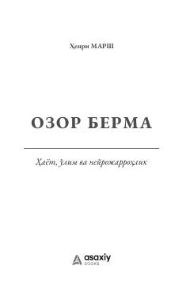

OBTaniqli neyrojarrohning hayot, o'lim va kasbiy mas'uliyat haqidagi ta'sirli xotiralari.
Ushbu kitob taniqli ingliz neyrojarrohi Genri Marshning hayotiy hikoyalari va kasbiy tajribalariga bag'ishlangan. Muallif neyrojarrohlik sohasidagi murakkab operatsiyalar, shifokorning mas'uliyati hamda bemorlar bilan bo'lgan samimiy munosabatlari haqida ochiq va ta'sirli tarzda hikoya qiladi.